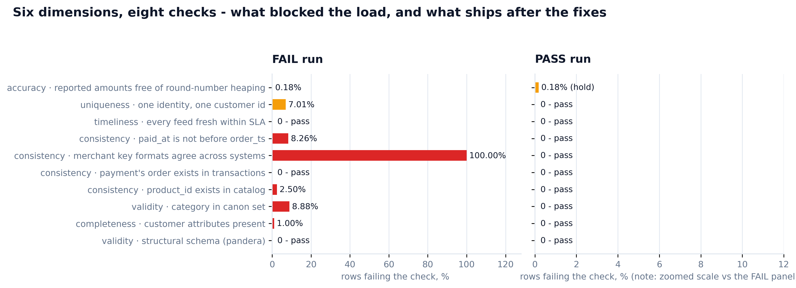
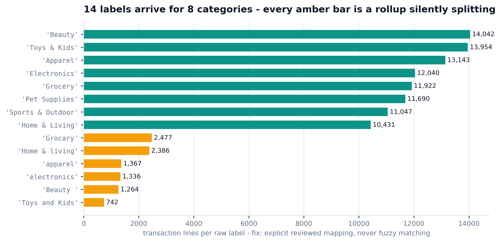
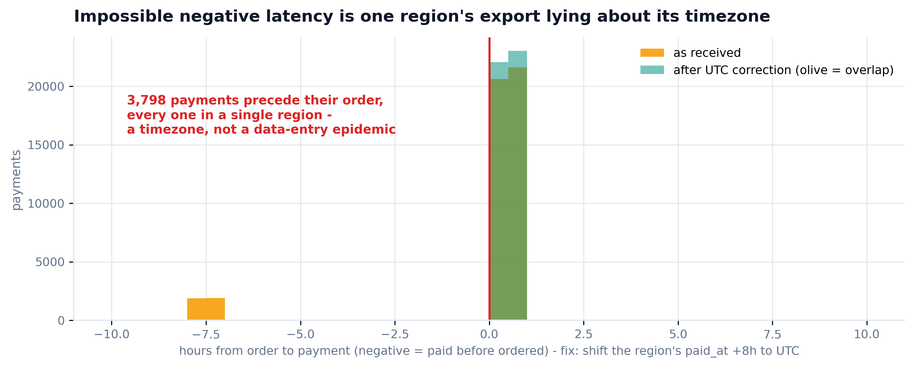
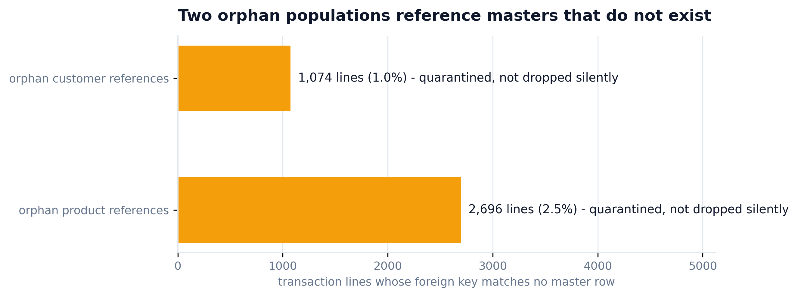
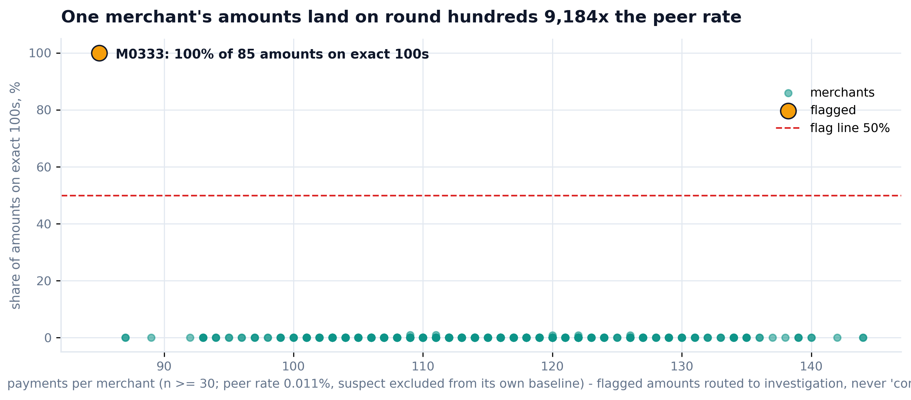
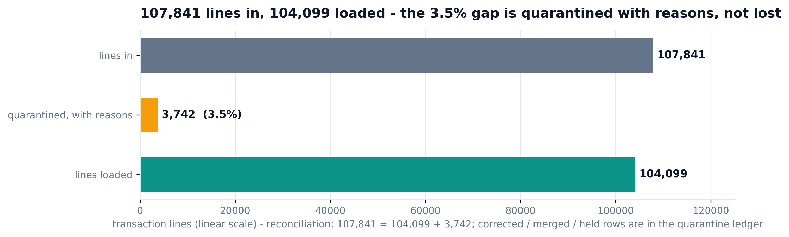

Every tutorial runs checks. This one runs a gate: the raw load is genuinely BLOCKED on five defects, the ingestion fixes are applied with a quarantine ledger that reconciles every row, the same checks re-run to SHIP WITH HOLDS - and the fabrication suspect is routed to investigation, never "corrected". Real FAIL run, real PASS run, seed 42.
This gate sits at stage 0 of the lineage: the same four raw files the warehouse build consumes. Quality problems are ingestion problems - catch them where they enter, with a ledger, not downstream where they surface as a wrong board number.
The raw generator plants six defects on purpose (seed 42, each documented in its docstring), and they map one-to-one onto the classic data-quality dimensions - so the gate is a complete tour of the discipline on data where the ground truth is known and recall can be verified.
| Defect in the raw dump | Dimension | Gate check |
|---|---|---|
| Orphan customer refs (nulls after denormalization) | completeness | customer attributes present |
| 14 category spellings for 8 real categories | validity | accepted-values against the canon set |
| Orphan product FKs · MER-0001 vs M0001 key split | consistency | referential integrity + cross-system conformity |
| One region's payments logged in local time (UTC+8) | consistency · event order | paid_at not before order_ts |
| (none planted - measured anyway) | timeliness | every feed fresh within a 24h SLA |
| ~800 customers cloned under two ids | uniqueness | duplicate-identity scan |
| Merchant M0333: 100% round-hundred amounts | accuracy | heaping / fabrication screen |
Honesty note: the event-order defect was originally filed under "timeliness" - the expert panel corrected it to temporal consistency, and timeliness got a real freshness-SLA check instead. The page you are reading reflects the reviewed mapping.
Not "run some checks". A gate answers a decision question with a verdict, and accounts for every row it touched on the way.
A gate needs declarative structural checks, custom forensic scans, a ledger discipline, and one self-contained artifact an executive can open anywhere.
Declarative structural schemas - types, ranges, nullability - validated lazily so every failure is collected, counted on row grain, and reported at once.
The four forensic scans no schema language expresses: cross-system key conformity, event-order latency, duplicate-identity groups, round-amount heaping.
Every row the gate touches gets a ledger entry with a reason: quarantined, corrected, merged or held. rows_in reconciles to rows_out, per table, by construction.
The DQ scorecard ships as one self-contained file - no CDN, no build - generated by the script from computed values, so not one figure is hand-typed.
Suspected fabrication is evidence, not a formatting defect: snapshot it immutably (sha256), hold it out of finance rollups, and hand it to an investigator.
The production home for these checks once they stabilize - promote the gate's assertions to a versioned suite that runs on every load.
One script runs the gate on the raw dump (it genuinely blocks), applies the ingestion fixes with a ledger, re-runs the same check functions on what ships, and generates the scorecard from the results dict. Grab the real code below.

Red = blocking failure, amber = warning, teal = pass. The PASS panel is genuinely re-executed on the fixed tables - only the fabrication hold survives, by design.




Top-left: 14 labels arrive for 8 categories - the fix is an explicit reviewed mapping that raises on anything unmapped, never fuzzy matching. Top-right: 3,798 payments precede their own orders, every one in a single region: a timezone diagnosis, so the whole region cohort is shifted to UTC and any residual negative latency is quarantined instead of blanket-"corrected". Bottom-left: two orphan populations, quarantined with reasons. Bottom-right: one merchant's amounts land on round hundreds 9,184x the peer rate (suspect excluded from its own baseline) - held, not edited.

Transactions: 107,841 in = 104,099 loaded + 3,742 quarantined. Payments: 46,007 in = 45,081 loaded + 926 quarantined - those 926 followed their quarantined orders out, because a fix that strands orphan payments is itself a defect (a reviewer caught v1 doing exactly that). Corrected (3,754), merged (662) and held (83) rows live in the ledger.
Generated by the script from the results dict - zero hand-typed figures. Badge language: PASS = was never dirty, FIXED = repaired at ingestion, HOLD = routed to investigation, still open.
| Planted defect | Caught by | Fix applied | Recall |
|---|---|---|---|
| Orphan customer refs (1,074 lines) | completeness check | quarantined with reasons | ✓ exact |
| 14 dirty category labels (8.88%) | validity check | reviewed mapping, raises on unmapped | ✓ exact |
| Orphan product FKs (2,696 · 2.50%) | referential check | quarantined; payments cascade too | ✓ exact |
| MER-/M- key split (100% mismatch) | conformity check | conformed via the master's own crosswalk | ✓ exact |
| UTC+8 export (3,798 payments) | event-order check | whole region cohort shifted; residuals quarantined | ✓ exact |
| 800 cloned customers | uniqueness scan | 662 merged - all that exist in the shipped facts (800 x 0.91² = 662; only pairs where both ids transact can double-count) | ✓ all observable |
| M0333 round-amount fabrication | heaping screen | HELD + sha256 evidence snapshot - never edited | ✓ routed |
Four senior reviewer agents - data-quality governance, analytics engineering, payments fraud, and board-facing insights, each 10+ years - reviewed the real code and outputs. They found defects in the gate itself. Every fix below is in the shipped code, and the numbers on this page are from the re-run.
"Your fix quarantines 3,742 transaction lines - and silently ships 926 payments whose orders just left. They appear in no ledger. Your memo's 'every row is accounted for' is untrue for the payments table."
"The timezone fix shifts whatever shows negative latency. That is symptom-conditioned: a genuinely broken timestamp in another region would get +8h and a ledger entry claiming a local-time export - a false audit trail."
"Your 500x anomaly is diluted - the suspect supplies 92% of its own base rate. Peers-only, it is 9,184x. And the file is named benford_*.png for a test you explicitly do not run. Preserve evidence an investigator can anchor on."
"The log-scale funnel reads as 'we lost a third of the data'. Four tiles wear PASS while describing live defects in present tense. And there is no money anywhere - SHIP WITH HOLDS is a decision with no stake attached."
# v1 (before): quarantine transaction lines... and strand their payments tx = tx[~orphan_cust] tx = tx[~orphan_prod] # 926 payments now reference orders that no longer ship - # they load anyway, in no ledger. "Every row accounted for" = false. # v2 (after): payments follow their orders out, with reasons orphan_pay = ~pay.order_id.isin(tx.order_id) for r in pay[orphan_pay].itertuples(): ledger_rows.append({"table": "payments", "row_id": r.pmt_ref, "action": "quarantined", "reason": f"order {r.order_id} was quarantined upstream"}) pay = pay[~orphan_pay] # 46,007 = 45,081 loaded + 926 quarantined - printed every run
Install once, point it at your raw files, rewrite the check set to your schema - keep the three rules: a gate not a report, every row accounted for, route fabrication instead of repairing it.
/plugin marketplace add phoebefu6/phoebe-data-skills /plugin install how-to-data-quality@phoebe-data-skills